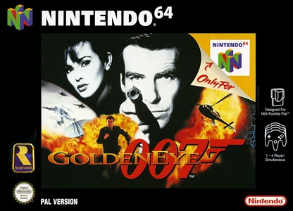
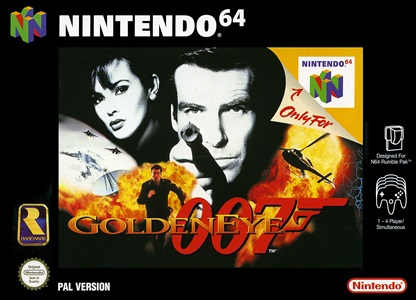

La Nintendo 64, sortie en 1996, est la première console de nintendo à avoir des jeux en raie 3D. Cette console est connue malgès 2 défauts: son catalogue de jeux et cette HORRIBLE manette trident.
 
